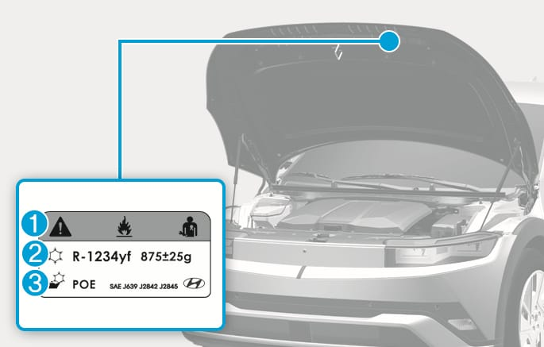
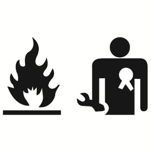

에어컨 점검하기

2C_RefrigerantTypeLabel
- 안전 주의 경고 - 경고 표지 / 가연성 냉매 / 정비 자격 기술자가 정비할 것
- 냉매 사양 - 지정 냉매 / 충전 용량
- 압축기 윤활유 사양
후드 안쪽에 부착된 에어컨 사양 라벨에는 차량에 사용된 냉매의 종류와 용량이 표기되어 있습니다.
-
냉매가 지나치게 많거나 부족하면 에어컨의 성능이 저하됩니다.
-
이 차량에는 친환경 신형 냉매인 R-1234yf가 사용됩니다.
에어컨과 관련된 이상이 발견되는 경우, 당사 직영 하이테크센터나 블루핸즈에서 차량을 점검하십시오.
차량에 적용된 R-1234yf 냉매는 기존 R-134a 냉매에 비해 환경 친화적인 물질이며, 지구온난화 현상에 대한 영향을 크게 줄일 수 있습니다.

WL_RefrigerantWarning
-
냉매는 고압 상태의 가연성 물질입니다. 정비 자격을 취득한 정비사가 차량의 에어컨을 정비하도록 하십시오.
-
차량을 정비할 때는 반드시 당사가 지정한 신냉매 R-1234yf와 냉동유를 주입하십시오. 당사에서 지정하지 않은 냉매와 냉동유를 사용할 경우, 냉방 성능이 저하되고 차량의 에어컨 시스템에 심각한 손상을 줄 수 있습니다. 이로 인해 발생한 문제는 보증받을 수 없습니다.
-
냉매는 적절한 장비를 이용해 충전하거나 회수해야 합니다.
-
냉매를 대기로 직접 방출하는 경우 인명피해 및 환경 오염이 발생할 수 있습니다.
-
경고에 수록된 지시사항을 따르지 않는 경우 심각한 인명피해가 발생할 수 있습니다.
-